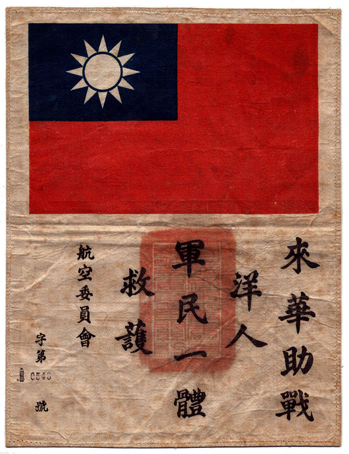

Home | Insignia | P40 | Jacket | Chit | Burma Road
In 1937 the rescue patch, or blood chit was issued to Flying Tigers' pilots of the American Volunteer Group. It was given to the airmen in case they were shot down, in hopes the Chinese people would come to the pilot's aid. The Blood Chits bore the Chinese Nationalist flag, the seal of the Chinese Air Force, and Chinese characters that read: "This foreign person has come to China to help in the war effort. Soldiers and civilians, one and all, should rescue and protect him" The message implied that a debt was owed to anyone who helped an airman avoid Japanese capture.